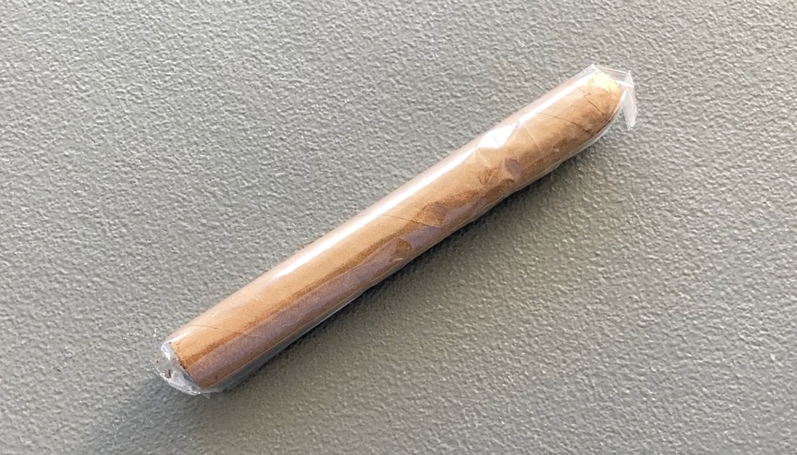
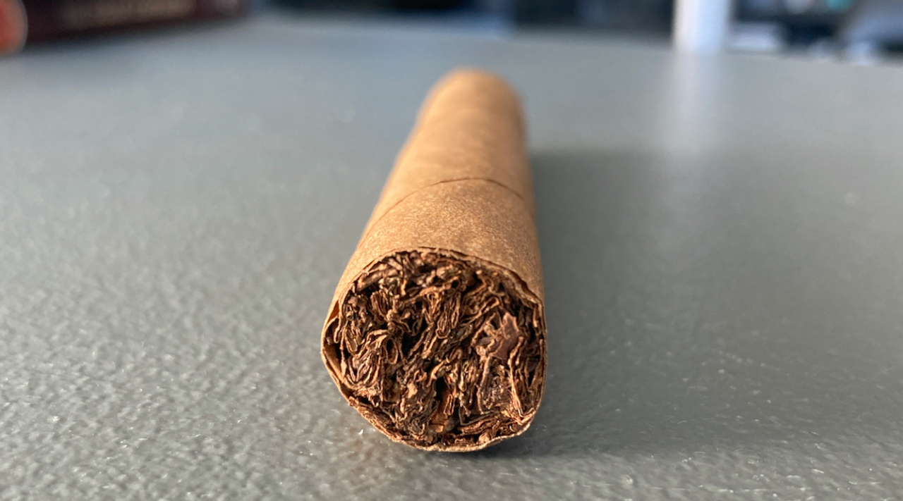
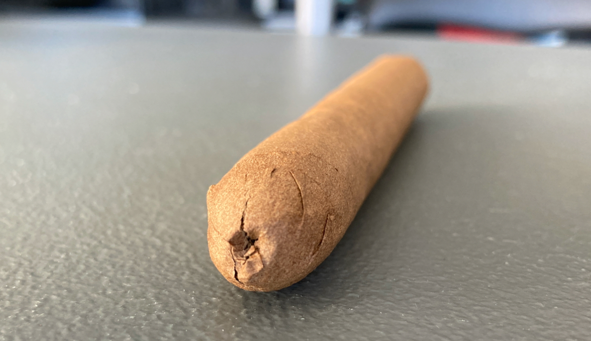
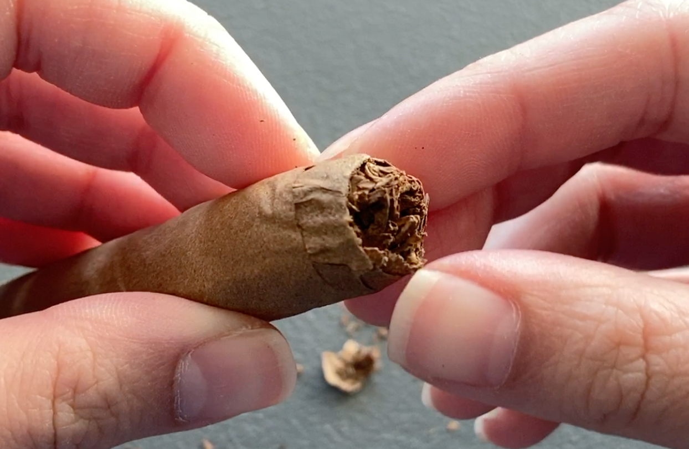
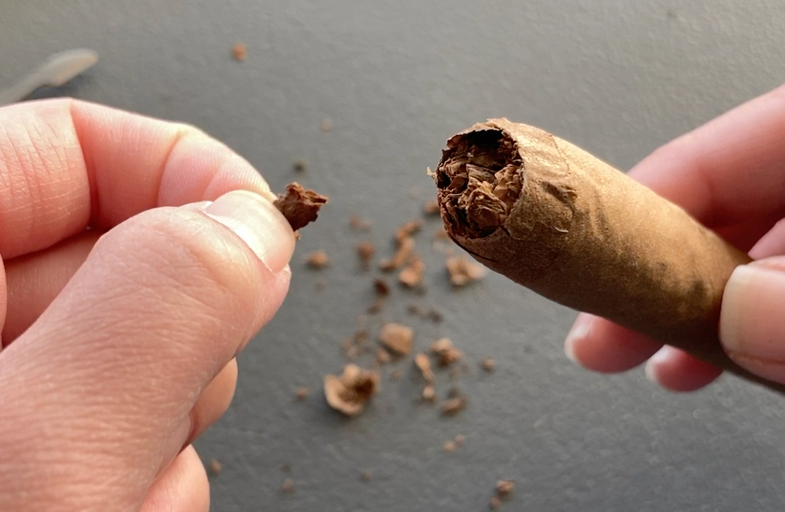
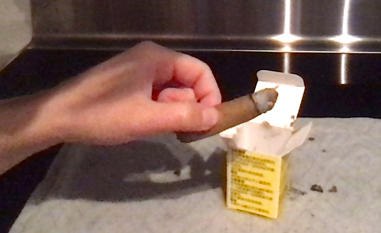
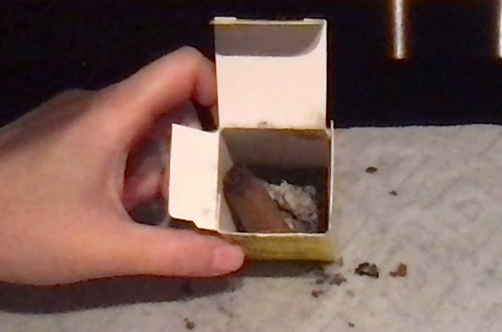

Cigar Review: Phillies - Blunt Strawberry
This is a short-filler cigar that comes in a cellophane. I only bought a single because I've never heard of this brand and it was way too cheap. Also, it doesn't come with a band. 🤔

You can kinda tell that this is nothing like a premium cigar by the wrapper leaf. It just looks so flat and feels a bit like recycle paper in hand (which is unlikely to be paper).
This cigar looks more like a torpedo shape. I did a quick search and found that Phillies is an US brand. That kinda explained why I've never heard of it. 😅
 
I didn't have the best time with cutting. I really need a sharper knife or a proper cigar cutter to get this right. The knife was too dull that I slightly damaged the wrapper. Also, a good portion of the filling just came off after the cap is off.
 
In turns of the flavours, it's just sweet and blend. I did not smell or tasted anything strawberry. It was just light tobacco with a tiny hint of sweetness and kinda boring throughout. I couldn't quite capture the moments, but it actually produced quite a good amount of smoke. ☁ Interestingly, people around me could actually smell the strawberry from me. 😮
The burn was not the best looking. I finished it a bit early because it was burning on both end midway through the cigar and it pretty much lost all the flavours there. It took me about 40min to reach my end though.
 
Overall, I personally did not taste or smell the strawberry flavour, but it's a pretty light body cigar and produces quite a good amount of smoke. The price is very cheap too and I would feel more comfortable taking one with me on the go without worrying the cigar could be damaged under any circumstances.
| Where did I get it? | Haze Smoke Shop (Surrey Central) |
| Price | About CAD$4 |
| Date of Smoke | June 10, 2023 |